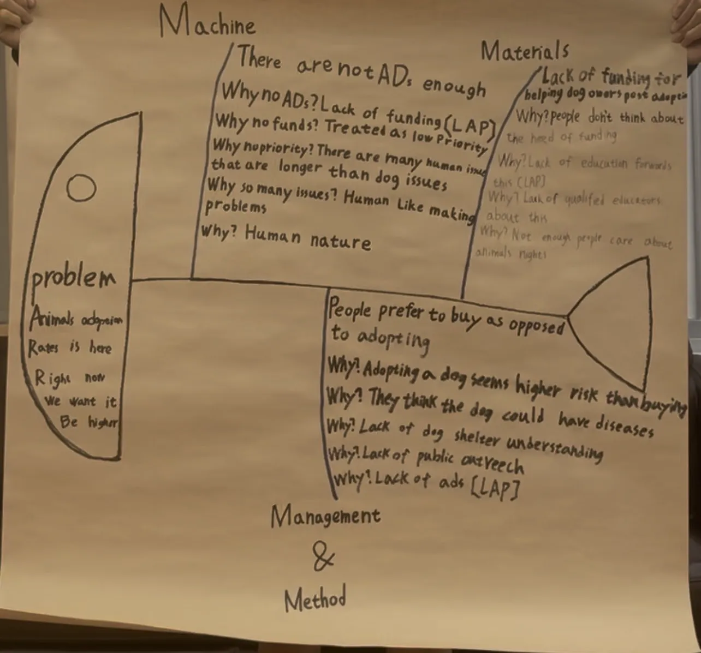

Sonny
Sonny
About Our Research
learning about research
This semester, our research topic was about stray dogs and dog adoption. We watched Twelve Nights, visited a shelter, talked to professionals, and used the Fishbone Diagram and 5 Whys method to develop our research question. After that, we created a survey and asked people about dog adoption and financial support. During the survey, many people did not have time to answer our questions, which made data collection difficult. However, we still collected enough responses and completed our research. Through this project, we learned more about animal welfare, research methods, teamwork, and communication skills. I also learned how to talk to people, collect data, and work with my group members.
fishboned and 5 why
This our fishboned and 5 why paper

video for Introduction
practice with Daan students
before we go to real survey,Dr.lee tell us need to practice to talk with daan students
Survey design
問題 1 您是否瞭解任何關於認養狗狗的財務支援方案？ 瞭解程度： □ 是，我瞭解 □ 不，我不瞭解 □ 不確定 問題 2 請列出您所知道的任何關於一般養狗的財務支援（不限於認養）。 :_____________________________________________________________ 問題 3 如果收容所或動保團體提供財務規劃支援，是否會提高您認養的意願？ 回答選項 請勾選 □ 是的，絕對會顯著提高我的意願 □ 是的，可能會稍微提高我的意願 □ 對我的決定沒有特別的影響 □ 不，完全不會影響我的意願 □ 不確定 問題 4 為了提高認養率，您對向繁殖場或寵物店購犬增加稅收的看法如何？ 回答選項 □ 非常同意 □ 同意 □ 中立 □ 不同意 □ 非常不同意 問題 5 如果能為認養的狗狗提供更多的醫療保健支援，是否會增加您的認養意願？ 回答選項 □ 是的，這將顯著增加我認養的可能性 □ 是的，這將稍微增加我認養的可能性 □ 對我的決定沒有任何影響 □ 不，我已打算認養或已認養了 □ 不，無論是否有支援，我已決定不會認養